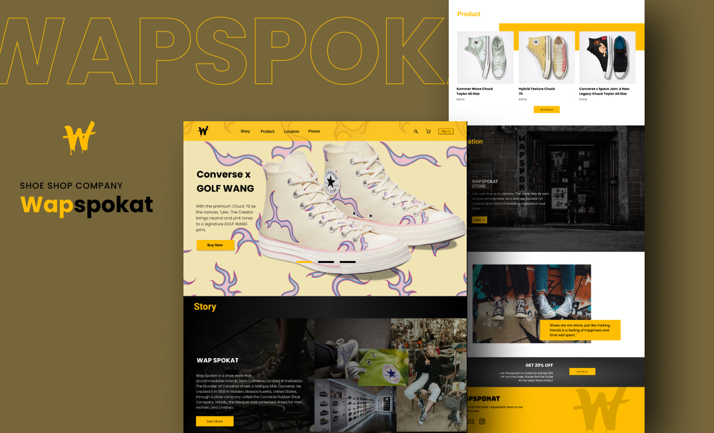

Membangun Kehadiran Online untuk Warisan Otentik dalam Setiap Langkah
Merancang situs web responsif dengan fungsionalitas eCommerce yang memungkinkan Wapspokat menjangkau pelanggan mereka secara langsung, memperluas jangkauan pasar mereka, dan mengurangi pengeluaran.
View Case Study →